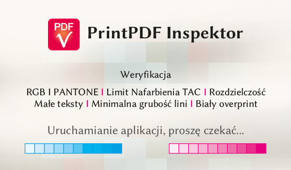
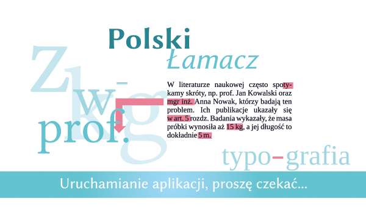
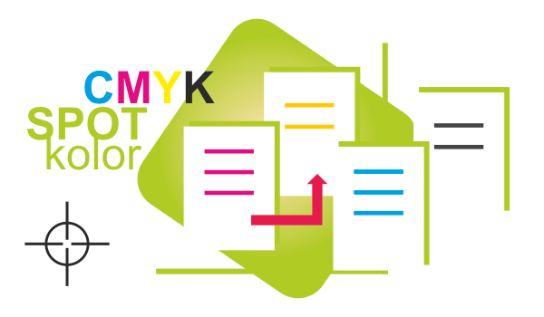
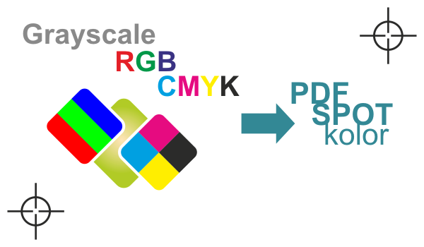

Program PrintPDF Inspektor
Weryfikuje poprawność plików PDF przeznaczonych do druku.
Sprawdza rozdzielczość, model kolorów, limity nafarbienia
TAC dla papierów powlekanych i gazetowych, obecność zbyt małych napisów,
i cienkich linii, białe elementy z nadanym atrybutem overprint
oraz kolorów dodatkowych PANTONE.
Pokazuje raport tekstowy oraz tworzy pliki pdf
z zaznaczonymi w/w elementami które nie spełniają wymagań druku.

POLSKI ŁAMACZ
Prosty program dla Windows (bez konieczności instalacji),
który automatycznie wprowadza niewidoczne znaki
podziału wyrazów zgodne z zasadami języka polskiego.
Które są aktywowane jako widoczne na końcach linii w programach
Word, DesignCraft, Scribus, QuarkXpress, oraz w html (przydatne przy skalowalnych stronach na telefonach itp.)
omijając brak funkcji dzielenia wyrazów w programach lub brak poprawnego dzielenia.
Wstawia twarde spacje:
Wiąże „wiszące spójniki” (a, i, o, u, w, z),
skróty (mgr, prof., str., r.)
oraz liczby z jednostkami (15 kg, 100 zł, 99 %),
aby nie rozrywało ich na końcach wierszy.
Umożliwia też dodanie wyjątków od dzielenia.
Pracuje na plikach "docx i txt"

PDF Separator PL (w budowie)
Program generuje podgląd separacji kolorystycznych z kompozytowych plików pdf.
Uwzględnia kolory CMYK, PANTONE oraz overprint.
ARCHIWIZATOR PROJEKTÓW 1.0 PL
Prosty program dla Windows (bez konieczności instalacji),
który pomaga uporządkować foldery robocze
i przenosi starsze wersje tych samych projektów do archiwum.
Rozwiązuje problem z wersjami projektów: plik_ostateczny, kopia1,
kopiadowyslania2, poprawka, v1, v2 itp.
jak w pozostałych elementach.
TYPOKOREKTOR 3.30 PL
Prosty program dla Windows (bez konieczności instalacji), który automatycznie przygotowuje dokumenty Word (.docx)
do składu zgodnie z zasadami polskiej typografii.
CO DOKŁADNIE ROBI:
Czyści tekst:
Usuwa nadmiarowe puste wiersze
oraz skleja wyrazy rozbite przeniesieniem linii.
Wstawia twarde spacje:
Wiąże „wiszące spójniki” (a, i, o, u, w, z),
skróty (mgr, prof., str., r.)
oraz liczby z jednostkami (15 kg, 100 zł, 99 %),
aby nie rozrywało ich na końcach wierszy.
Poprawia interpunkcję i znaki:
Usuwa wielokrotne spacje,
zamienia cudzysłowy proste na polskie drukarskie („ ”),
poprawia spacje przy nawiasach oraz ujednolica myślniki do półpauz ( – ).
Ostrzega o niedomkniętych nawiasach lub cudzysłowach
i zawsze zapisuje wynik jako nowy plik (_Oczyszczony.docx),
link do dokumentu lub innego pliku.

bitmap2spotpdf
Program zamienia zdjęcia RGB, CMYK, Grayscale na pdf z jednoczesną ich koloryzacją na jeden kolor zdefiniowany w pdf jako „/Separation /PANTONE”.
Ponieważ są to autorskie programy bez płatnego certyfikatu Microsoftu, system Windows może wyświetlić komunikat „System Windows ochronił ten komputer”. Aby uruchomić program, kliknij „Więcej informacji”, a następnie „Uruchom mimo to”. *Programy są darmowe*Programy zostały stworzone w modelu mieszanym z pomocą AI w procesie vibe codingu.